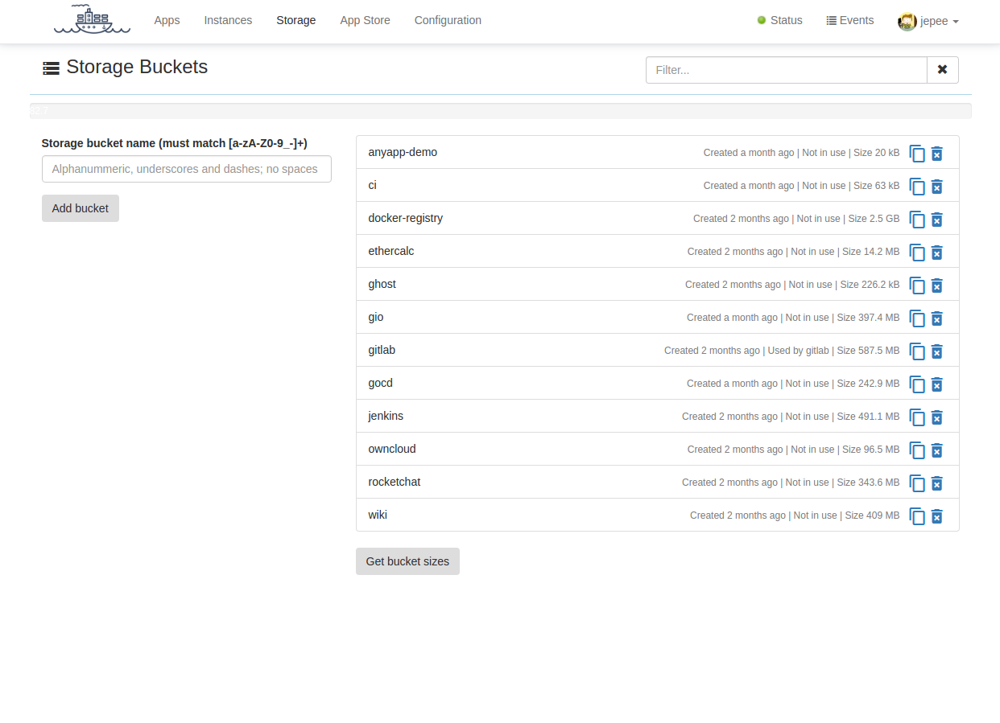

Storage buckets
BigBoat abstracts persistent storage via the concept of storage buckets. For all practical purposes storage buckets can be thought of as separate file systems. When creating an instance (starting an application) you can attach it to a storage bucket. All the usual docker volume bind mapping of each of the services comprising this application will be done inside (at the root level) of the storage bucket.
Storage buckets remain after you stop the instance and the data in them is persisted. This means, that next time you create an instance you can use the persisted data by simple attaching the same storage bucket to that instance.
Storage buckets can be created, copied and deleted on the Storage page of BigBoat.
